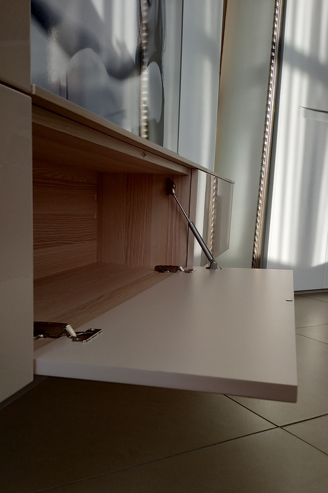
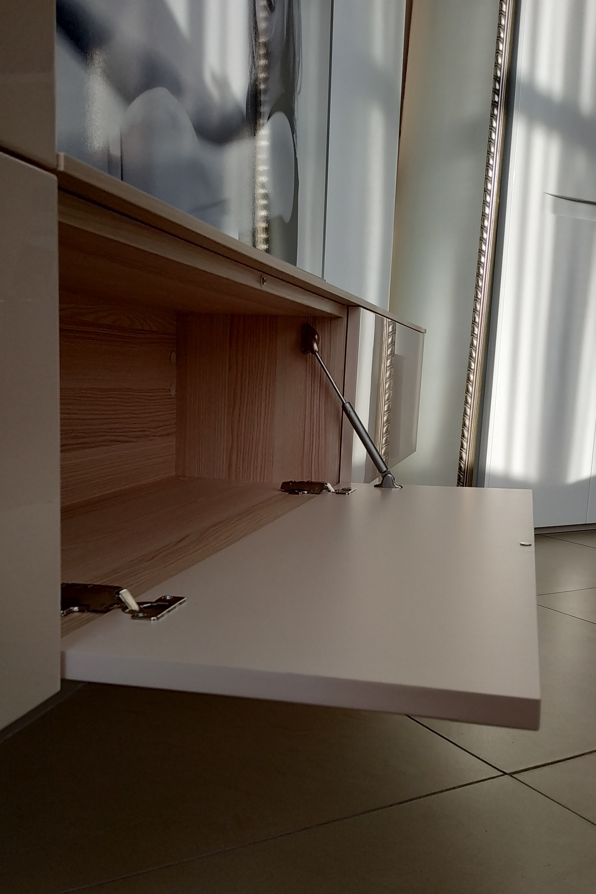

Строгий и лаконичный дизайн ТВ-тумбы Atena немецкой фабрики Gwinner очень актуален для интерьеров, выполненных в современном стиле. В комплект тумбы для телевизора входит небольшой стеллаж со встроенной витриной для посуды. Нарядную и в то же время уютную атмосферу, особенно в вечернее время, создаёт интегрированная LED-подсветка. Можно не включать основной свет в комнате, а воспользоваться приятным мягким светом, идущим от мебели. Корпус и фасады мебели имеют двустороннюю покраску матовым УФ-лаком приятного теплого серого цвета. Акцентная вставка на фасаде тумбы - кольцевой срез дуба. Столешница и стеллаж выполнены из шпонированного дубом МДФ. Дуб, вобравший в себя энергию солнечных лучей, наполняет комнату теплом и уютом. Такая мебель приносит радость от использования долгие годы.
Габариты: д/г/в 277,8/49,2/218,4 см


Мебель для гостиной ATENA (Gwinner, Германия)
ЦЕНА: 389 000 Р
Настоящий итальянский угловой диван ECLETTICO фабрики Calia Italia! Не реплика! Комплектация с раскладным механизмом, матрас высотой 16 см. Можно использовать на каждый день. Очень удобная высота спинки, плюс регулируемые подголовники. Глубина сиденья комфортная для людей среднего роста (до 180 см). Ткань смесовая с добавление 30% вискозы, благородного светло-серого цвета с красивым плетением, приятная тактильно.
Габариты: h83*103/163*266 см / размеры матраса 140*195*h16 см


Угловой раскладной диван ECLETTICO (Calia Italia, Италия)
ЦЕНА: 359 900 Р
Стильное кожаное кресло для отдыха ARCHIBALD в комплекте с пуфом для ног - достойное украшение интерьера. Эргономика кресла на высоте! Комфортный отдых обеспечен. Каркас выполнен из массива дуба и мебельной фанеры. Молдинг и опоры - массив дуба. Кресло ARCHIBALD уместно не только в гостиной, но и в кабинете или спальне.
Габариты (мм): h740*770*830


Кресло Archibald с пуфом (ОСА, Россия)
ЦЕНА: 105 000 Р
ТВ-тумба SIBOX выглядит лаконично и очень современно. Она прекрасно организует и зону ТВ в гостиной, и хранение вещей, не загромождая пространство. Фасады имеют двустороннюю покраску: с внутренней стороны — шелковисто-матовое, с внешней — высокоглянцевое. Цвет эмали WCP176 (NCS). Корпус модулей выполнен из ЛДСП с тиснением под структуру натурального ясеня. Открывание фасадов: push-to-open.
Габариты, см: д/г/в 299/32/90


 

Тумба для телевизора навесная Sibox (Astron, Россия)
ЦЕНА: 89 000 Р